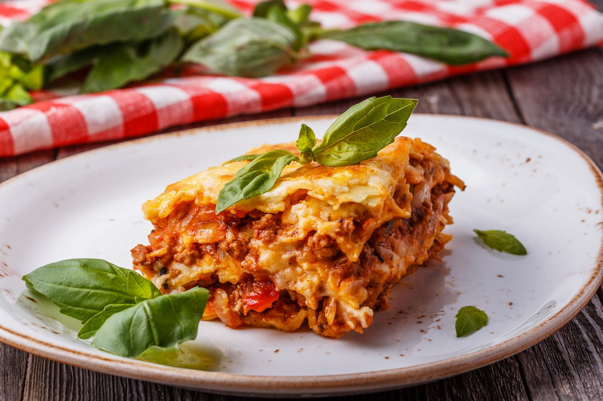

Lasagna

Description
Ingredients
- 9 Lasagna sheets
- 1/2 Kg Chicken
- 2 Eggs
- 2 Onions
- 4 Tomatoes
- 4 Tbsp Pasta Sauce
- 1 Tbsp Garlic
- 1 Tsp Dried oregano
- 1 Tsp Mixed Herbs
- 1/4 Tsp Black Pepper
- 4 Basil leaves
- 200 ml Olive Oil
- 150 gr Parmesan
- 200 gr Mozarella
- 200g Button Mushrooms
- Salt, to taste
Steps
- To begin crafting this recipe, firstly, preheat oven to 180 degrees Celsius.
- Cut eggplants into thin circles and dredge with a teaspoon of salt.
Preparing Eggplants/Mushrooms
- Leave for ten minutes and then squeeze out water, pressing the eggplants between palms. Rub/bast olive oil on the eggplants and put into hot oven for ten minutes or till they change color and appear cooked. Keep aside.
- If using mushrooms, mushrooms are to be quartered and sautéed with a teaspoon of olive oil until slightly done. It takes about 2 minutes on medium flame.
Lasagna Pasta Sheets
- In a large bring salted water to boil and put in the Del Monte lasagne pasta sheets. Allow it to cook to al dente- about 8 to 10 minutes. Remove and drain. Drizzle a little olive oil over them so they don't stick.
- In a large frying pan, add enough oil, heat and fry the onions till translucent.
- Add the garlic and then the minced meat. Let it brown a bit and then cover and cook over low heat, for ten minutes.
- Add the pureed tomatoes, the Del Monte pasta paste, herbs, pepper and salt and let it again cook on a low fire till the meat is a thick, mushy consistency. Add the fresh, torn basil leaves last.
- Keep one tablespoon of cheese aside. In a bowl, beat eggs lightly, add the remaining cheeses, beat again and keep aside.
Baking
- In a flat bottomed lasagna pan, ladle 1/3 rd of the meat sauce to cover the bottom.
- Gently place 3 pasta sheets to cover the meat, overlapping them a bit.
- Scatter 1/3rd of the mushrooms or processed eggplants over the pasta.
- Use about 1/3 rd of the egg-cheese mixture to drizzle over the top of the mushrooms.
- Repeat the process till three layers of the sauce, pasta, veggies and egg sauce is done. Over the last layer of egg sauce, scatter the grated cheese.
- Bake at 180 degrees for an hour. Let it sit for about ten minutes before digging into it.
Back to homepage